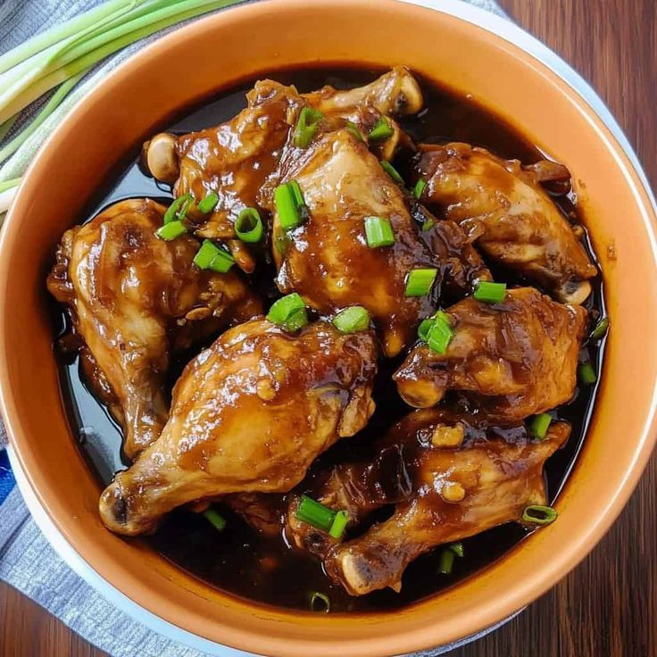
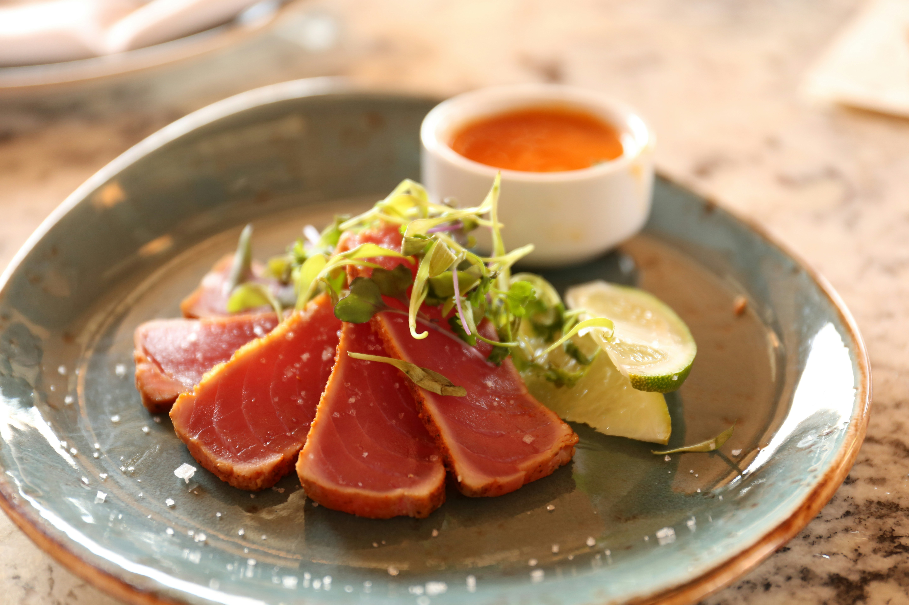

Our Recipes
Discover delicious culinary creations
All Recipes

Carne Asada
Prep: 15min | Cook: 5min

Classic Chicken Adobo
Prep: 15min | Cook: 45min

Greek Ribs
Prep: 15min | Cook: 5min
Tangy Pork Sinigang
Prep: 20min | Cook: 60min

Vegetable Soup
Prep: 15min | Cook: 5min
Pancit Canton
Prep: 20min | Cook: 30min

Banana Pancakes
Prep: 15min | Cook: 5min
Lumpia Shanghai
Prep: 30min | Cook: 15min

Spicy Tuna Bowl
Prep: 20min | Cook: 10min

Sizzling Pork Sisig
Prep: 25min | Cook: 30min

Chocolate Lava Cake
Prep: 15min | Cook: 12min
Ube Chiffon Cake
Prep: 30min | Cook: 40min
Beef Bulalo
Prep: 20min | Cook: 120min

Avocado Toast
Prep: 10min | Cook: 5min

Bibingka
Prep: 15min | Cook: 25min
Grilled Salmon
Prep: 15min | Cook: 12min

Arroz Caldo
Prep: 15min | Cook: 40min
Chocolate Chip Cookies
Prep: 15min | Cook: 12min
1
2
3